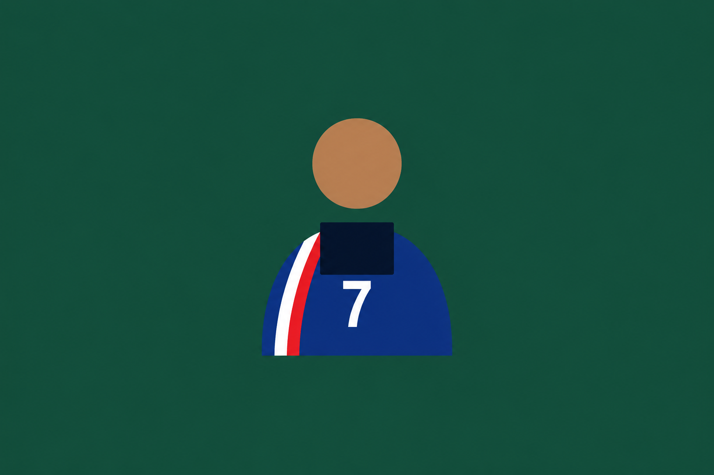

#01 · Argentina
Lionel Messi
Enganche zurdo, capitán de su selección. Ganó una Copa del Mundo y varios Balones de Oro a fuerza de gambeta y gol.
Un plantel armado a puro commit, fork y pull request.
Cada compañero/a que colabora suma su nombre a esta alineación.
Una tarjeta por jugador, club o momento futbolero. Mantené el mismo formato al agregar la tuya.
Enganche zurdo, capitán de su selección. Ganó una Copa del Mundo y varios Balones de Oro a fuerza de gambeta y gol.
Extremo eléctrico, ídolo de la Canarinha. Famoso por sus jugadas de fantasía y sus festejos inolvidables tras cada gol.
Máximo goleador histórico de su selección. Disciplina física y salto aéreo que lo hicieron una pesadilla para cualquier defensa.

Delantero francés reconocido por su técnica, visión de juego y capacidad para aparecer en los momentos importantes. Campeón del mundo con Francia en 2018.